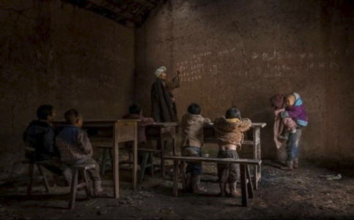

羡慕、嫉妒、恨
发表时间：2017-08-25 来源：挑战名人堂 作者： sunny 责任编辑： sunny
编者按：2017第七届哈姆丹国际摄影大赛强势来袭，现已面向全球摄影师开始火热征稿！
哈姆丹国际摄影大赛是号称拥有全球最高奖金的大赛事，该赛事以高达42.3万美元的总奖金（折合人民币约283万）和12万美元全场大奖（折合人民币约80万）而受到全球摄影人关注。 沈健作为PSA会长奖章获得者，对国际摄影大赛有着自己的独到理解，来看看他对第三届12万美元大奖颁发给周抚阳的《乡村教师》作品后，国内摄影圈闹得沸沸扬扬的事儿怎么说？ 文章发表在XXXX年沈健博客，经作者修改后同意转载。） 一块板儿砖砸着了周抚阳的《乡村教师》，结果是金砖，砸出了羡慕、嫉妒、恨。 周抚阳的《乡村教师》一举在阿联酋迪拜哈姆丹国际摄影大赛（HIAP）拿到了12万美元的奖励，又一次把沙龙摄影推上了前台。要不是超出人们想象的高额大奖，引来吃瓜群众关心场景真假、是否摆拍，特别是引来国内某知名大腕不由分说，抄起板砖砸将上去，要没点承受能力，估计都得把钱捐了希望工程不可。《乡村教师》 作者：周抚阳 美国摄影学会认证的国际影展在组别设置上，开放组可以提交任何作品，可以摆，也可以后期制作，创新、创意；也有不容许像素移动或后期制作的“自然组”、“纪实组”、“旅游组”，招展文件组别设置明确，表述严谨；常有作者投机取巧，以“智”取胜，难逃评委的法眼，抓住后留下不诚信记录，目前已有几位“大师”级人物，被美国摄影学会列入黑名单。所以参加国际影展的影友大多小心谨慎。 阿联酋迪拜哈姆丹国际摄影大赛设四个组，分别是创造未来组、一般组（不接受黑白作品）、黑白组、街头生活组。每组一幅作品，他们收了世界各地4万幅作品。从参展的难度来说一组一幅，自己挑选出来又对得上阿拉伯人评委的口味更难，获奖是难上加难，所以说拿到全场大奖就应该是被金砖砸着了。 《乡村教师》没有违反HIPA影展的比赛规则，成为一幅被组委会认可的优秀作品，应该毫无争议可言，之所以争议，是因为观者漠视影展规则，凭借想象，预设立场，《乡村教师》被“纪实”了一把。更有影友好说“这片子我也有”，这就是妒心了。 这两年影友的增长如雨后春笋，当官的、有钱的、没钱的、退休的只要热爱都背个单反加入到摄影军团，大部分人陶冶情操、休闲娱乐、锻炼身体。刚刚入门能抄袭、照猫画虎已属不错了，摄影点儿就这么多，能踩的点儿被前人踩平了，拍张片子，圈内人一看就知道哪儿拍的，至于是谁抄谁的，很难追述源头，拍出不一样的作品的确很难。比赛起来差的就是谁拿出什么片子、谁的门子硬气，要不也不会传出大赛评委为自己朋友片子胜出，闹得不可开交（注意不是为了艺术评价）的地步。误打误撞运气好的也有，可是这样的影展已经越来越少了。 国内的影展规则杂七妈八，投稿不限数量，有钱的多给几张多给钱，没钱的走个门子，弄去500张让评委挑去也有；另外一个影展对圈和圈收费还不一样，让新来的特郁闷，请客送礼家常便饭，染点恶习见怪不怪。大的影展还好，小的展览得奖的要么是有权人，要么是有钱人或者是小圈子直接分了，大部分人就是个分母，让组委会去向领导汇报成绩的。你想，老虎都这么多了，兔子吃点窝边草不很正常吗？！ 能参加国际影赛的大多不是摄影圈里的老江湖，国外影赛玩的是公正，比的是谁的片子好，好片加运气就能入选，获奖神清气爽。这方面老江湖没优势，所以他们觉得味儿淡，大多比较拒绝。新加盟的影友知识水平、综合能力大大超过老江湖，没门子或不愿意走门子的，发现国外影赛没论资排辈、没审美疲劳、没语言歧视，以照片说话，新手过来也能得个入选、获奖啥的，激起创作热情，拍出更多好片，让家人、朋友夸上两句兴高采烈，老婆大笔一挥：追加投资，设备又上一个台阶，还有为国争光的那股傲气，碰到地方重视，那真是神气活现。 全民摄影的年代，社会对摄影作品的评价就象大人对孩子学习的要求，可望不可及，高得脱离了摄影本身的乐趣。一来二来谈思想，动不动谈责任，似乎讲不出个道道来，作品就没了价值，所以能吹、能侃的就有了优势，名字、故事编得特有深意。外国人看作品、评片子比较简单，评委只能看见作品，看不见名字，一眼共鸣，给你高分，你就是大奖获得者。 摄影与电视剧不同，好作品直接表现幸福生活的少，夸张苦日子的多，比如专业的荷赛，大部分获奖作品是带血、带泪、带死人的。至于说《乡村教师》“摆出的贫困”能获奖也与此多少有关。可从“源于生活、高于生活”的艺术创作理念来说，这不就是生活吗？谁说那背着弟弟听课的孩子内心就是苦的呢？ 城里人没法想象村里人的苦日子，最近到了趟东北，农户家三缸咸菜要伴着老人过上一冬；有病吃药在城里再正常不过了，可到了村里治个胃疼恐怕要靠后院夏天里绽放的那束罂粟花才能熬过去；城里弄块黑板是个平常的事儿，到了村里要多难有多难，否则也就没了希望工程了。 好了，说了这么多，我还想跟周抚阳掏心窝子的讲一句：你是名人了，名人在享受赞扬的时候，要经得住拍砖，踏踏实实地把钱用在刀刃上，四万分之一已经不易，想再争个四万分之一，这样的概率就是十六亿分之一，我只能呵呵了。 --沈健
文章来源：中国摄影家协会网站 如果涉及版权问题请及时与本站编辑联系，我们将及时处理，联系邮箱：43787777@qq.com